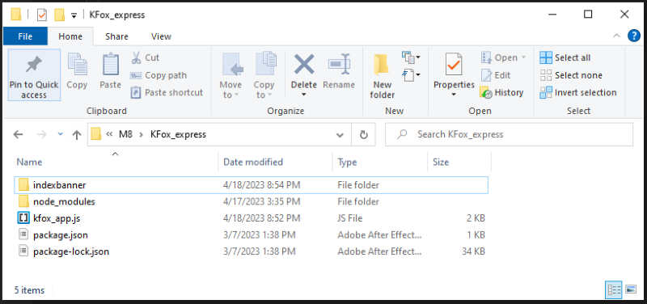
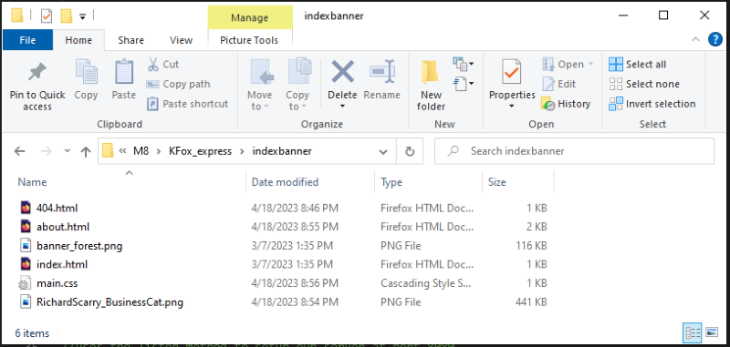
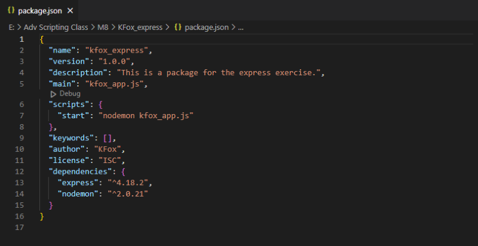
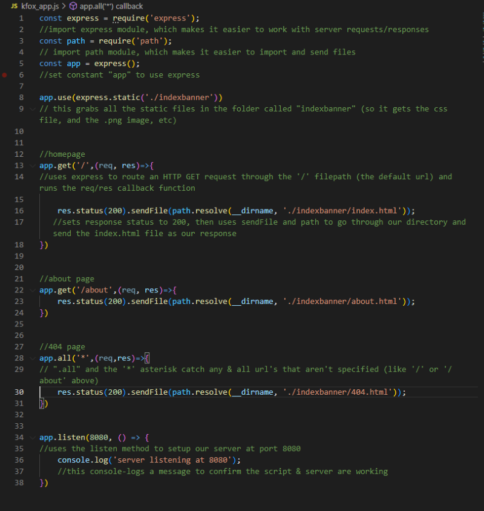
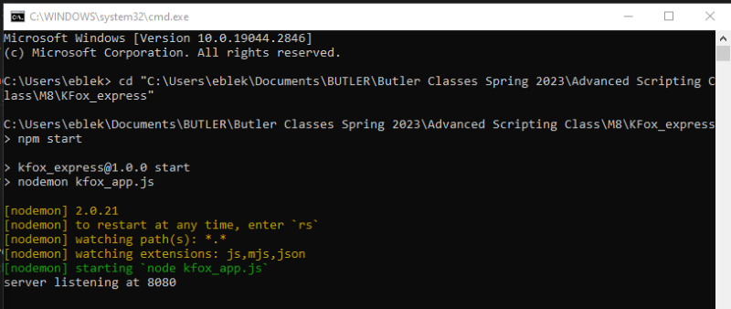
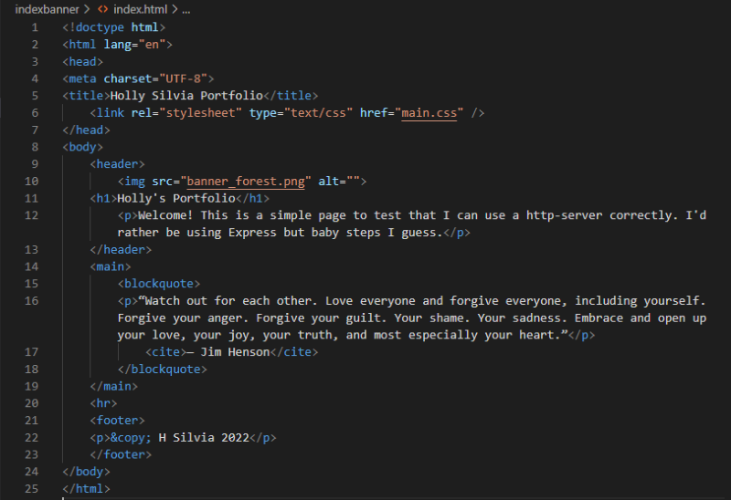
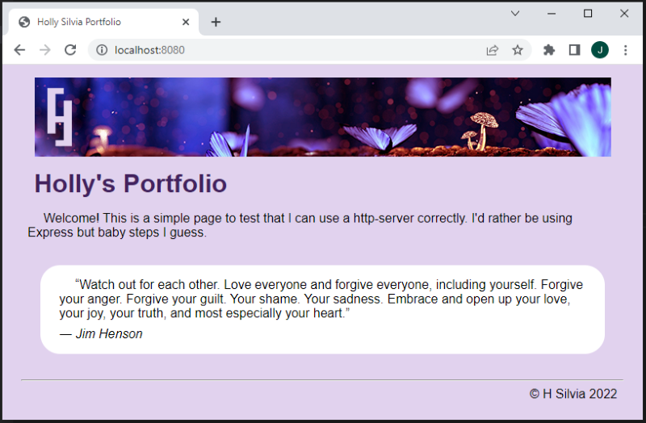
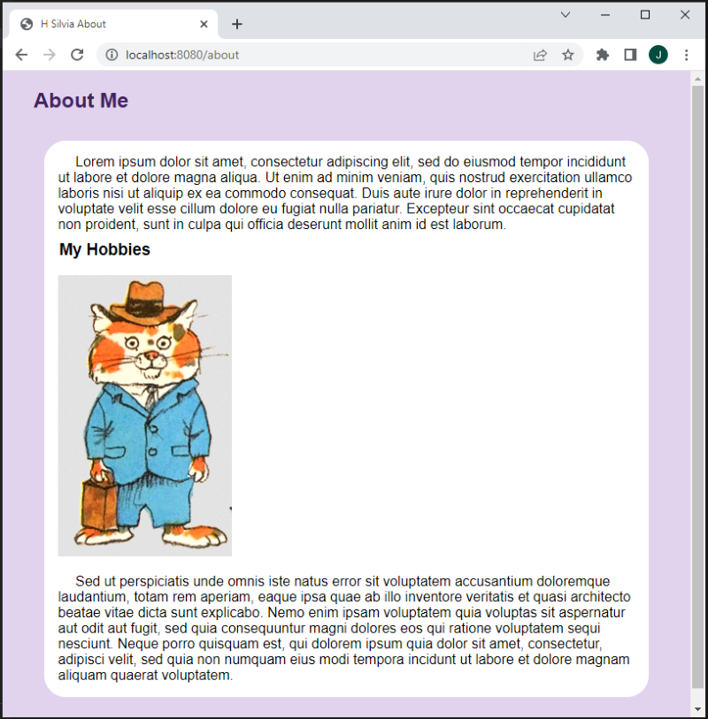
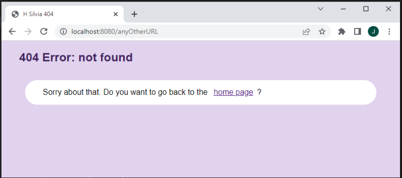

Scripting Exercise with Node.js framework
Express.js is a backend framework used for servers that work with web applications and APIs. It's an external module, so when we use it in our files, it must be imported before the included modules (like file system, path, http-server, etc). Express works very similarly to http-server as seen in our M7 HTTP Server Exercise. With express, this logic doesn't change. They both use server requests and responses. Express just simplifies the process with different methods.
In this exercise, we started the same way as our M8 Packages Exercise. First we opened the console and ran "npm init" to create our package.json file. Then we used the console to add express and nodemon as dependencies, storing them in the node_modules folder. Next we made a folder called "indexbanner" containing the files for a basic website. Finally, we made a script called "kfox_app.js" to make our local server and host the site.
Below is a screenshot of our root folder containing our package files, indexbanner folder, and our script. I also included a screenshot of the site-files within indexbanner for reference.
 Here we can see the code of our package.json file, which also shows the express and nodemon dependencies.
Our kfox_app.js script imports Express since it's an external module. Then we set up requests/responses to host all the files within our indexbanner folder. We also used console-log to confirm our server is working once we run the script.
In the console, we used the "start" script from our package to run kfox_app.js. Below, we can see the console-log confirming that our server is active.
For reference, here's a screenshot with the contents of index.html. This is the home-page that we should see when we visit our server in a browser.
As predicted, we can visit our server at "localhost:8080" in a browser. Our server displays the various pages and files of our site.
  